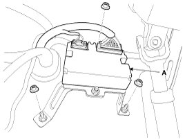

Oil Pump Unit (OPU)
Removal
1. Disconnect the battery negative cable from the battery and then wait for at least 30 seconds.
2. Remove the crash lower pad.
3. Remove the oil pump unit connector.
4. Remove the oil pump unit (A) by loosening bolts.

Installation
1. Install is the reverse of the removal.
Inspection
1. Test OPU ground circuit: Measure resistance between OPU and chassis ground using the backside of OPU harness connector as TCM side check point. If the problem is found, repair it.
Specification:Below 1Ohms
2. Test OPU connector: Disconnect the OPU connector and visually check the ground terminals on OPU side and harness side for bent pins or poor contact pressure. If the problem is found, repair it.
3. If problem is not found in Step 1 and 2, the OPU could be faulty. If so, make sure there were no DTC's before swapping the OPU with a new one, and then check the vehicle again. If DTC's were found, examine this first before swapping OPU.
4. Re-test the original OPU: Install the original OPU (may be broken) into a known-good vehicle and check the vehicle. If the problem occurs again, replace the original OPU with a new one. If problem does not occur, this is intermittent problem .